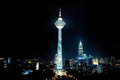
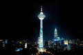

Malasia es un país ubicado en el sureste asiático que consta de trece estados y tres territorios federales, con un área de 329.847 km². Su capital es Kuala Lumpur pero Putrajaya es la sede de su gobierno.

 
